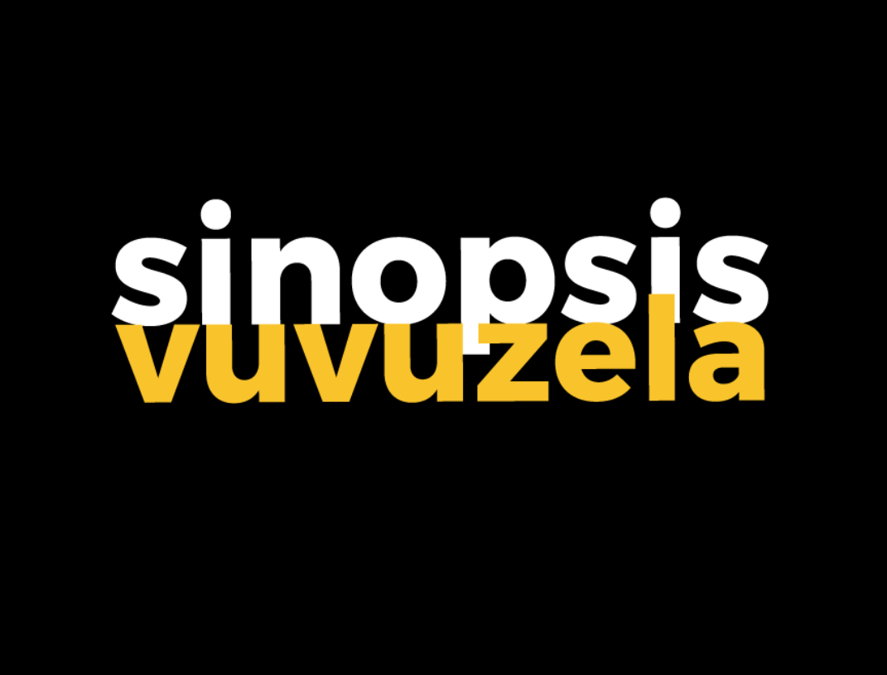
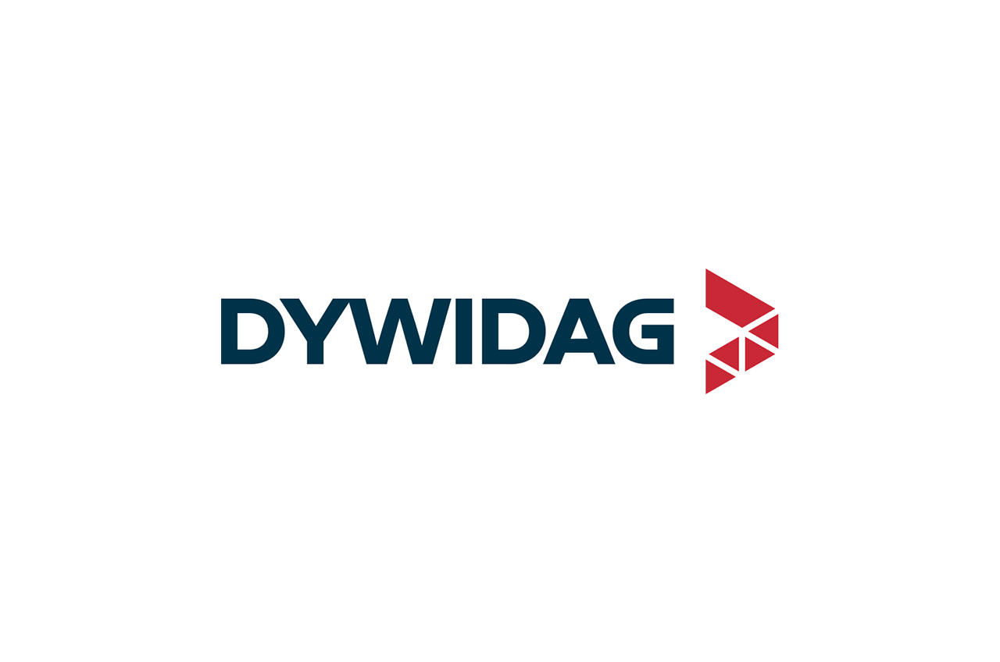

Mi nombre es Joel Amador Martín y aquí presento mi Portfolio con el objetivo de buscar mi próxima experiencia laboral, orientando mi perfil profesional hacia el diseño y desarrollo web, área en la que estoy enfocado actualmente y en la que continúo formándome de manera constante. Busco principalmente oportunidades de desarrollador front-end, web full stack, de aplicaciones web con ReactJS o NextJS, y de maquetador web.
Trabajo con HTML, CSS y JavaScript para el diseño de páginas web, desarrollando sitios web modernos, funcionales y adaptados a distintos dispositivos. Utilizo Visual Studio Code como entorno principal para construir mis proyectos, y los gestiono mediante Git y GitHub, además de realizar despliegues en entornos reales con Netlify. También estoy especializado en desarrollo Full stack con JavaScript para la creación de aplicaciones web dinámicas ya sea con ReactJs, React Router, TypeScript y NextJS. Domino también NPM Y Vite para gestionar paquetes y en la parte de servidor, sé desarrollar APIs REST con ExpressJS, trabajando con peticiones asíncronas, middlewares y bases de datos como MongoDB mediante Prisma y Mongoose.
Cuento con formación en Realización de Proyectos Audiovisuales y Espectáculos, así como especialización en Audiodescripción y Subtitulado. Esta base me ha permitido desarrollar una fuerte sensibilidad visual, creatividad y atención al detalle, cualidades que aplico directamente al diseño de interfaces y experiencias digitales.
Además, he trabajado con empresas como Sinopsis Vuvuzela y Trend By Trend, desempeñando funciones como realizador, editor de vídeo y operador de cámara en eventos deportivos y proyectos digitales. También he creado contenido para plataformas como TikTok utilizando herramientas como CapCut, DaVinci Resolve y Adobe Premiere.
Me considero una persona creativa, resolutiva y con gran capacidad de aprendizaje, capaz de unir diseño, tecnología y comunicación para crear productos digitales atractivos y funcionales. Actualmente, mi objetivo es desarrollarme profesionalmente en el ámbito del desarrollo web, aportando valor en proyectos digitales y creciendo dentro del sector tecnológico.
Estoy convencido de que mi perfil puede encajar con las necesidades de su equipo, y estaría encantado de tener la oportunidad de contribuir al crecimiento de su empresa.
Joel Amador Martín
2024
Agencia creativa de marketing digital especializada en gestión de redes sociales, creación de contenido y branding, que ayuda a las marcas a conectar con su audiencia mediante estrategias basadas en tendencias actuales. Su enfoque suele centrarse en generar comunidad, engagement y visibilidad online a través de contenido creativo y adaptado a cada plataforma.
2021-ACTUALIDAD

Sinopsis Vuvuzela es una productora audiovisual especializada en retransmisiones deportivas y cobertura de eventos, que ofrece servicios de streaming, producción y difusión de contenidos para televisión y plataformas digitales. Trabaja con clubes, federaciones, empresas y medios, ayudando a aumentar la visibilidad de eventos mediante tecnología audiovisual y estrategias de comunicación.
2018-2020

DYWIDAG Sistemas Constructivos es una empresa dedicada a soluciones de ingeniería y construcción, especializada en sistemas de anclajes, cimentaciones especiales y estructuras geotécnicas. Desarrolla proyectos para obra civil y edificación, aportando tecnología, seguridad y experiencia en infraestructuras complejas como puentes, túneles y grandes construcciones.